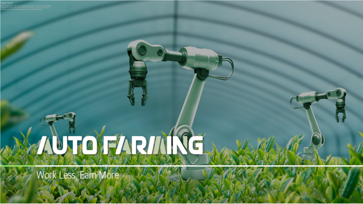
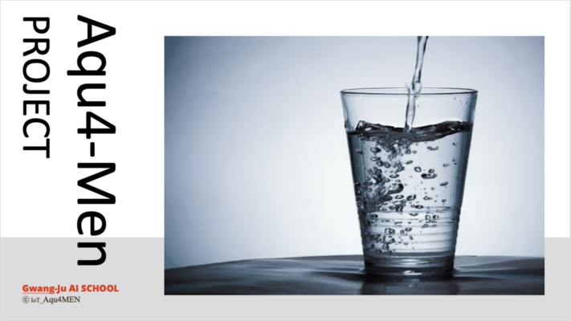
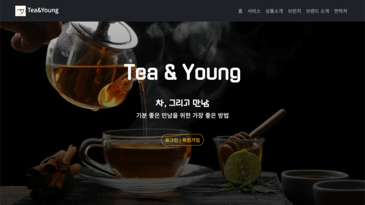

자격사항
- 빅데이터준전문가
- SQL개발자
- AI-900
- TOEIC 870
활동내역
-
2022. 6 - 2022. 12
광주인공지능사관학교 3기
-
2022. 10
회귀분석을 통한 유량예측
한국시스템학회 논문 기재
-
2022. 12
비전시스템·로봇팔을 활용한
묘삼 자동 식재 장치 특허출원

새싹삼 농가를 위한 3세대 스마트팜
2022. 11. 7 ~ 12. 14
이상기후, 농업인력 감소 문제를 3세대 스마트팜으로 해소한다. 비전시스템과 로봇팔 기술을 접목해 작물을 자동으로 식재한다.

물먹는 습관 형성을 위한 스마트컵
2022. 8. 10 ~ 8. 30
물을 자주 마셔야한다는 것은 알지만 왜 자주 마시지 못할까? 우리를 둘러싼 IoT를 활용해 자주 마실 수 있는 환경을 조성해보자!

다류시장 활성화를 위한 서비스 개발
2023. 1. 10 ~ (진행중)
차 전문 브랜드 Tea&Young의 홈페이지를 제작합니다. 오마카세 예약기능과 MBTI를 활용한 Tea 추천 기능을 개발합니다.